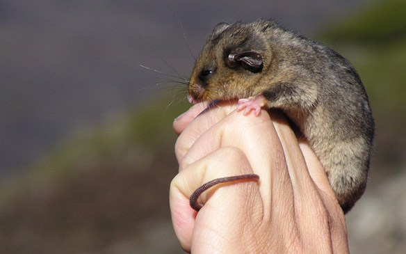
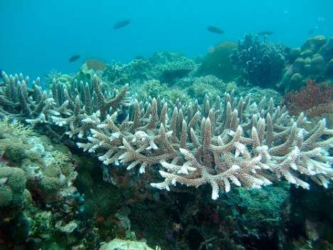
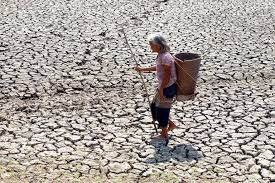

Climate is the term used to describe the overall pattern of the weather over a long period of time. Climate change occurs when external factors contribute to the abnormal patterns the climate has. Such external factors include human activities, like the use of aerosols, the deforestation of trees around the world and the use of fossil fuels.
This has many negative effects on the ecosystems as a whole. Some effects include the frequency of wildfires, longer periods of drought, and the fluctuation in temperature levels across the world. Due to the fluctuation of temperature levels the world is experiencing, the organisms habitating its ecosystems will have to adapt to the sudden changes quickly, and can possibly die out if they are unable to adapt quickly enough.

These effects of climate change on organisms can and will ultimately destroy the ecosystems that we live in. Organisms who are not fit enough to adapt to the environment will eventually be incapable of accomplishing their niche for the environment, which in turn will not allow its ecosystem to balance out, from the pollination of flowers to the maintenance of soil fertility. This all leads to the degradation of land, water and air quality, and will make our home so much worse.
We can see this clearly in the ASEAN Region. The Global Climate Risk Index states that “average temperatures in Southeast Asia have risen every decade since 1960, and that Vietnam, Myanmar, the Philippines, and Thailand are among the 10 countries in the world most affected by climate change in the past 20 years.” Visualizations of this is within the corals reefs of the Philippines, where only 1% of all the corals in the country are said to be in “excellent condition”. This has really disheartening implications of our government systems and should be a wake-up call for all of us to take action against this problem in our ecosystems.

So, what can we do about it? Since we are in a day and age where we have advanced to the point that we can make machines and robot that can solve a lot of things, so why can’t we use that knowledge to our advantage? We could create a sustainable robot that runs on solar energy, and that it would be a type of robot that monitors the climate around us, and senses the usage of gases or fuels and warns us if we are overusing it. That way, we would be more informed of our surroundings and we would be encouraged to act quicker.
Well, we could do the run-of-the-mill things like unplugging, transportation without the use of vehicles, or the lessening of deforestation, but that is not enough. We need to know more about what is happening around the world involving climate change. We need to tell these corporations that they are destroying their own homes for corporate greed. We need to act fast and strong if we want something to change within our environment, and it starts with you. It starts with all of us, so are you going to take a stand against climate change?